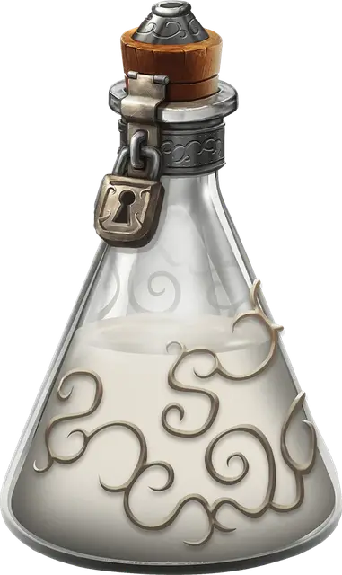

Превосходный клей
Sovereign Glue
Чудесный предмет, легендарный

Рекомендованная стоимость от 25 001 зм
Эта тягучая, молочно-белая субстанция может склеить два любых предмета. Она должна храниться в сосуде или фляге, покрытой изнутри маслом скольжения. В найденном контейнере находится 1к6 + 1 унция клея. Одна унция клея может покрыть 1 квадратный фут поверхности. Клей затвердевает через 1 минуту. После этого связь двух предметов можно разорвать только нанесёнием универсального растворителя [universal solvent] или масла эфирности [oil of etherealness], либо же заклинанием исполнение желаний [wish].